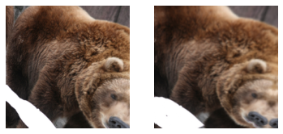
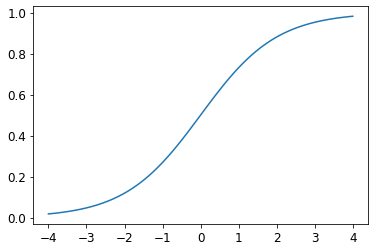

Notes on fastai Book Ch. 5
ai
fastai
notes
pytorch
Chapter 5 covers creating a custom DataBlock for an image classifier, pre-sizing, cross-entropy loss, model interpretation, picking learning rates, transfer learning, and discriminative learning rates.
This post is part of the following series:
- Image Classification
- From Dogs and Cats to Pet Breeds
- Presizing
- Cross-Entropy Loss
- Model Interpretation
- Improving Our Model
- References
Image Classification
- There are a lot of details you need to get right for your models to be accurate and reliable
- You must be able to look inside your neural network as it trains and as it makes predictions, find possible problems and know how to fix them
From Dogs and Cats to Pet Breeds
- In real-life
- start with a dataset that we know nothing about
- figure out how it is put together
- figure out how to extract the data we need from it
- figure out what the data looks like
- Data is usually provided in one of two ways
- Individual files representing items of data, possibly organized into folder or with filenames representing information about those items
- text documents
- images
- A table of data in which each row is an item and may include filenames providing connections between the data in the table and data in other formats
- CSV files
- Exceptions:
- Domains like Genomics
- binary database formats
- network streams
- Domains like Genomics
- Individual files representing items of data, possibly organized into folder or with filenames representing information about those items
from fastai.vision.all import *
matplotlib.rc('image', cmap='Greys')The Oxford-IIIT Pet Dataset
- https://www.robots.ox.ac.uk/~vgg/data/pets/
- a 37 category pet dataset with roughly 200 images for each class
- images have a large variations in scale, pose and lighting
- all images have an associated ground truth annotation of breed, head ROI, and pixel level trimap segmentation
path = untar_data(URLs.PETS)
pathPath('/home/innom-dt/.fastai/data/oxford-iiit-pet')#hide
Path.BASE_PATH = path
pathPath('.')path.ls()(#2) [Path('images'),Path('annotations')]# associated ground truth annotation of breed, head ROI, and pixel level trimap segmentation
# Not needed for classification
(path/"annotations").ls()(#7) [Path('annotations/trimaps'),Path('annotations/xmls'),Path('annotations/._trimaps'),Path('annotations/list.txt'),Path('annotations/test.txt'),Path('annotations/README'),Path('annotations/trainval.txt')](path/"images").ls()(#7393) [Path('images/Birman_121.jpg'),Path('images/shiba_inu_131.jpg'),Path('images/Bombay_176.jpg'),Path('images/Bengal_199.jpg'),Path('images/beagle_41.jpg'),Path('images/beagle_27.jpg'),Path('images/great_pyrenees_181.jpg'),Path('images/Bengal_100.jpg'),Path('images/keeshond_124.jpg'),Path('images/havanese_115.jpg')...]Pet breed and species is indicated in the file name for each image * Cat breeds have capitalized file names and dog breeds have lowercase file names
fname = (path/"images").ls()[0]
fnamePath('images/Birman_121.jpg')Regular Expressions
- a special string written in the regular expression language, which specifies a general rule for deciding whether another string passes a test
- extremely useful for pattern matching and extracting sections of text
- Python Regular Expressions Cheat Sheet
- Origin:
- originally examples of a “regular” language
- the lowest rung within the Chomsky hierarchy
- Chomsky hierarchy
- a grammar classification developed by linguist Noam Chomsky
- Noam Chomsky
- also wrote Syntactic Structures (pdf)
- the pioneering work searching for the formal grammar underlying human language
- also wrote Syntactic Structures (pdf)
- originally examples of a “regular” language
# Matches all instances of any group of characters before a sequence of digits right before '.jpg'
re.findall(r'(.+)_\d+.jpg$', fname.name)['Birman']fastai RegexLabeller:
- https://docs.fast.ai/data.transforms.html#RegexLabeller
- label items using a regular expression pattern
RegexLabellerfastai.data.transforms.RegexLabellerget_image_files<function fastai.data.transforms.get_image_files(path, recurse=True, folders=None)>pets = DataBlock(blocks = (ImageBlock, CategoryBlock),
get_items=get_image_files,
splitter=RandomSplitter(seed=42),
get_y=using_attr(RegexLabeller(r'(.+)_\d+.jpg$'), 'name'),
item_tfms=Resize(460),
batch_tfms=aug_transforms(size=224, min_scale=0.75))
dls = pets.dataloaders(path/"images")dls.c37import pandas as pdfastai Categorize:
- https://docs.fast.ai/data.transforms.html#Categorize
- reversible transform of a category string to a vocab id
- inherits from DisplayedTransform
fastai DisplayedTransform
- https://fastcore.fast.ai/transform#DisplayedTransform
- A transform that shows its attributes
pd.DataFrame(dls.categorize.vocab)| 0 | |
|---|---|
| 0 | Abyssinian |
| 1 | Bengal |
| 2 | Birman |
| 3 | Bombay |
| 4 | British_Shorthair |
| 5 | Egyptian_Mau |
| 6 | Maine_Coon |
| 7 | Persian |
| 8 | Ragdoll |
| 9 | Russian_Blue |
| 10 | Siamese |
| 11 | Sphynx |
| 12 | american_bulldog |
| 13 | american_pit_bull_terrier |
| 14 | basset_hound |
| 15 | beagle |
| 16 | boxer |
| 17 | chihuahua |
| 18 | english_cocker_spaniel |
| 19 | english_setter |
| 20 | german_shorthaired |
| 21 | great_pyrenees |
| 22 | havanese |
| 23 | japanese_chin |
| 24 | keeshond |
| 25 | leonberger |
| 26 | miniature_pinscher |
| 27 | newfoundland |
| 28 | pomeranian |
| 29 | pug |
| 30 | saint_bernard |
| 31 | samoyed |
| 32 | scottish_terrier |
| 33 | shiba_inu |
| 34 | staffordshire_bull_terrier |
| 35 | wheaten_terrier |
| 36 | yorkshire_terrier |
Presizing
- we need our images to have the same dimensions before we collate them into tensors
- we should compose our augmentation transforms into fewer transformations and transform the images into uniform sizes
Steps for presizing
- Resize images to relatively “large” dimensions compared to the target training dimensions
- Larger images have some spare margin for augmentations that might result in empty zones in the image
- augmented images are then cropped and resized to a square
- the crop area is chosen randomly on the training set
- Compose all the common augmentation operations into one, and perform a combined operation on the GPU
- all potentially destructive operations are performed together with a single interpolation at the end
dblock1 = DataBlock(blocks=(ImageBlock(), CategoryBlock()),
get_y=parent_label,
item_tfms=Resize(460))(Path.cwd()/'images'/'grizzly.jpg')Path('/media/innom-dt/Samsung_T3/Projects/Current_Projects/fastbook/clean/images/grizzly.jpg')# Create a test DataLoaders object with 100 copies of the same image
dls1 = dblock1.dataloaders([(Path.cwd()/'images'/'grizzly.jpg')]*100, bs=8)
print(len(dls1.items))
print(dls1.categorize.vocab)80
['images']# Return elements from the iterable until it is exhausted.
dls1.train.get_idxs = lambda: Inf.onesitertools.cycle()
- https://docs.python.org/3/library/itertools.html#itertools.cycle
- Make an iterator returning elements from the iterable and saving a copy of each
type(Inf.ones)itertools.cyclefastai DataLoader.one_batch:
- https://github.com/fastai/fastai/blob/d84b426e2afe17b3af09b33f49c77bd692625f0d/fastai/data/load.py#L146
- Return one batch from
DataLoader
DataLoader.one_batch<function fastai.data.load.DataLoader.one_batch(self)>x,y = dls1.one_batch()
print(x.shape)
print(y.shape)
print(y)torch.Size([8, 3, 460, 460])
torch.Size([8])
TensorCategory([0, 0, 0, 0, 0, 0, 0, 0], device='cuda:0')print(TensorImage)<class 'fastai.torch_core.TensorImage'>fastai TensorImage:
- https://docs.fast.ai/torch_core.html#TensorImage
- A Tensor which support subclass pickling, and maintains metadata when casting or after methods
TensorImage.affine_coord:
TensorImage.rotate:
TensorImage.zoom:
TensorImage.warp:
- https://docs.fast.ai/vision.augment.html#Warp
- https://github.com/fastai/fastai/blob/d84b426e2afe17b3af09b33f49c77bd692625f0d/fastai/vision/augment.py#L656
print(TensorImage)
print(TensorImage.affine_coord)
print(TensorImage.rotate)
print(TensorImage.zoom)
print(TensorImage.warp)<class 'fastai.torch_core.TensorImage'>
<function TensorImage.affine_coord at 0x7fb370ba0940>
<function TensorImage.rotate at 0x7fb370ba8dc0>
<function TensorImage.zoom at 0x7fb370bb2160>
<function TensorImage.warp at 0x7fb370bb2820>fastcore Pipeline:
- https://fastcore.fast.ai/transform.html#Pipeline
- A pipeline of composed (for encode/decode) transforms, setup with types
- a wrapper for compose_tfms
Pipelinefastcore.transform.Pipeline_,axs = subplots(1, 2)
x1 = TensorImage(x.clone())
x1 = x1.affine_coord(sz=224)
x1 = x1.rotate(draw=30, p=1.)
x1 = x1.zoom(draw=1.2, p=1.)
x1 = x1.warp(draw_x=-0.2, draw_y=0.2, p=1.)
# Go through transforms and combine together affine/coord or lighting transforms
tfms = setup_aug_tfms([Rotate(draw=30, p=1, size=224), Zoom(draw=1.2, p=1., size=224),
Warp(draw_x=-0.2, draw_y=0.2, p=1., size=224)])
x = Pipeline(tfms)(x)
#x.affine_coord(coord_tfm=coord_tfm, sz=size, mode=mode, pad_mode=pad_mode)
TensorImage(x[0]).show(ctx=axs[0])
TensorImage(x1[0]).show(ctx=axs[1]);
Checking and Debugging a DataBlock
- always check your data when creating a new DataBlock
- make sure the augmentations work as intended
- once your data looks right, run it through a simple model
- start getting feedback as soon as possible
dls.show_batch(nrows=1, ncols=3)
pets1 = DataBlock(blocks = (ImageBlock, CategoryBlock),
get_items=get_image_files,
splitter=RandomSplitter(seed=42),
get_y=using_attr(RegexLabeller(r'(.+)_\d+.jpg$'), 'name'))DataBlock.summary():
- https://docs.fast.ai/data.block.html#DataBlock.summary
- Steps through the transform pipeline for one batch
DataBlock.summary<function fastai.data.block.DataBlock.summary(self: fastai.data.block.DataBlock, source, bs=4, show_batch=False, **kwargs)>pets1.summary(path/"images")Setting-up type transforms pipelines
Collecting items from /home/innom-dt/.fastai/data/oxford-iiit-pet/images
Found 7390 items
2 datasets of sizes 5912,1478
Setting up Pipeline: PILBase.create
Setting up Pipeline: partial -> Categorize -- {'vocab': None, 'sort': True, 'add_na': False}
Building one sample
Pipeline: PILBase.create
starting from
/home/innom-dt/.fastai/data/oxford-iiit-pet/images/great_pyrenees_182.jpg
applying PILBase.create gives
PILImage mode=RGB size=400x500
Pipeline: partial -> Categorize -- {'vocab': None, 'sort': True, 'add_na': False}
starting from
/home/innom-dt/.fastai/data/oxford-iiit-pet/images/great_pyrenees_182.jpg
applying partial gives
great_pyrenees
applying Categorize -- {'vocab': None, 'sort': True, 'add_na': False} gives
TensorCategory(21)
Final sample: (PILImage mode=RGB size=400x500, TensorCategory(21))
Collecting items from /home/innom-dt/.fastai/data/oxford-iiit-pet/images
Found 7390 items
2 datasets of sizes 5912,1478
Setting up Pipeline: PILBase.create
Setting up Pipeline: partial -> Categorize -- {'vocab': None, 'sort': True, 'add_na': False}
Setting up after_item: Pipeline: ToTensor
Setting up before_batch: Pipeline:
Setting up after_batch: Pipeline: IntToFloatTensor -- {'div': 255.0, 'div_mask': 1}
Building one batch
Applying item_tfms to the first sample:
Pipeline: ToTensor
starting from
(PILImage mode=RGB size=400x500, TensorCategory(21))
applying ToTensor gives
(TensorImage of size 3x500x400, TensorCategory(21))
Adding the next 3 samples
No before_batch transform to apply
Collating items in a batch
Error! It's not possible to collate your items in a batch
Could not collate the 0-th members of your tuples because got the following shapes
torch.Size([3, 500, 400]),torch.Size([3, 334, 500]),torch.Size([3, 375, 500]),torch.Size([3, 500, 375])learn = cnn_learner(dls, resnet34, metrics=error_rate)
learn.fine_tune(2)| epoch | train_loss | valid_loss | error_rate | time |
|---|---|---|---|---|
| 0 | 1.530514 | 0.347316 | 0.115697 | 00:19 |
| epoch | train_loss | valid_loss | error_rate | time |
|---|---|---|---|---|
| 0 | 0.556219 | 0.296193 | 0.098782 | 00:23 |
| 1 | 0.340186 | 0.199035 | 0.066982 | 00:23 |
Cross-Entropy Loss
- the combination of taking the softmax and then the log likelihood
- works even when our dependent variable has more than two categories
- results in faster and more reliable training
Viewing Activations and Labels
x,y = dls.one_batch()y.shapetorch.Size([64])yTensorCategory([31, 30, 5, 17, 6, 7, 4, 22, 4, 27, 2, 19, 12, 14, 11, 8, 5, 26, 14, 11, 28, 25, 35, 4, 22, 36, 31, 9, 27, 20, 23, 33, 2, 27, 0, 18, 12, 22, 17, 21, 25, 13, 16, 15, 33, 14, 20, 15,
8, 18, 36, 32, 7, 26, 4, 20, 36, 14, 25, 32, 4, 14, 25, 17], device='cuda:0')Learner.get_preds:
- https://docs.fast.ai/learner.html#Learner.get_preds
- Get the predictions and targets using a dataset index or an iterator of batches
Learner.get_preds<function fastai.learner.Learner.get_preds(self, ds_idx=1, dl=None, with_input=False, with_decoded=False, with_loss=False, act=None, inner=False, reorder=True, cbs=None, save_preds=None, save_targs=None, concat_dim=0)>preds,_ = learn.get_preds(dl=[(x,y)])
preds[0]TensorBase([2.8917e-05, 1.6130e-08, 3.2022e-04, 1.7541e-05, 1.5420e-05, 3.5346e-06, 7.1617e-06, 1.0242e-04, 4.3236e-05, 7.5608e-05, 3.9862e-05, 7.9690e-07, 7.0372e-07, 4.5139e-08, 2.7499e-06, 4.2070e-06,
9.9794e-08, 1.6574e-06, 4.6330e-07, 5.7135e-06, 8.5598e-07, 8.1175e-02, 7.1706e-05, 1.1809e-05, 7.3426e-05, 9.2441e-06, 7.5984e-07, 2.6505e-06, 1.1533e-04, 4.2089e-07, 4.4916e-06, 9.1771e-01,
3.1806e-06, 7.8490e-06, 4.9332e-07, 1.4727e-04, 3.1404e-07])len(preds[0]),preds[0].sum()(37, TensorBase(1.0000))Softmax
- \(\text{Softmax}(x_{i}) = \frac{\exp(x_i)}{\sum_j \exp(x_j)}\)
- takes in an n-dimensional input Tensor and rescales them so that the elements are all in the range
[0,1]and sum to 1. - the multi-category equivalent of sigmoid
- slightly bigger activation values are amplified, making the highest value closer to
1 - the first part of cross-entropy loss
- ideal for when we know each image has a definite correct label
- during training
- less ideal if we want our model to tell us it does not recognize what is in the image
- during inference
- might be better to use multiple binary output columns, each using a sigmoid activation
plot_function(torch.sigmoid, min=-4,max=4)
# set random seed to get same results across sessions
torch.random.manual_seed(42);# Create a random set of test activations for a binary classification problem
acts = torch.randn((6,2))*2
actstensor([[ 0.6734, 0.2576],
[ 0.4689, 0.4607],
[-2.2457, -0.3727],
[ 4.4164, -1.2760],
[ 0.9233, 0.5347],
[ 1.0698, 1.6187]])acts.sigmoid()tensor([[0.6623, 0.5641],
[0.6151, 0.6132],
[0.0957, 0.4079],
[0.9881, 0.2182],
[0.7157, 0.6306],
[0.7446, 0.8346]])(acts[:,0]-acts[:,1]).sigmoid()tensor([0.6025, 0.5021, 0.1332, 0.9966, 0.5959, 0.3661])\(\text{Softmax}(x_{i}) = \frac{\exp(x_i)}{\sum_j \exp(x_j)}\)
def softmax(x): return 2.718**x / (2.718**x).sum(dim=1, keepdim=True)
softmax(acts)tensor([[0.6025, 0.3975],
[0.5021, 0.4979],
[0.1332, 0.8668],
[0.9966, 0.0034],
[0.5959, 0.4041],
[0.3661, 0.6339]])print(softmax(acts)[0])
softmax(acts)[0].sum()tensor([0.6025, 0.3975])
tensor(1.)torch.softmax
- https://pytorch.org/docs/stable/generated/torch.nn.Softmax.html
- Applies the Softmax function to an n-dimensional input Tensor rescaling them so that the elements of the n-dimensional output Tensor lie in the range [0,1] and sum to 1.
torch.softmax<function _VariableFunctionsClass.softmax>sm_acts = torch.softmax(acts, dim=1)
sm_actstensor([[0.6025, 0.3975],
[0.5021, 0.4979],
[0.1332, 0.8668],
[0.9966, 0.0034],
[0.5959, 0.4041],
[0.3661, 0.6339]])Log Likelihood
\(y_{i} = \log_{e}{x_{i}}\)
\(\log{(a*b)} = \log{(a)} + \log{(b)}\)
- logarithms increase linearly when the underlying signal increases exponentially or multiplicatively
- means multiplication can be replaced with addition, which is easier for working with very larger or very small numbers
The gradient of cross_entropy(a,b) is softmax(a)-b
- the gradient is proportional to the difference between the prediction and the target
- the same as mean squared error in regression, since the gradient of
(a-b)**2 is 2*(a-b) - since the gradient is linear, we will not see any sudden jumps or exponential increases in gradients
- the same as mean squared error in regression, since the gradient of
# Sample labels for testing
targ = tensor([0,1,0,1,1,0])sm_actstensor([[0.6025, 0.3975],
[0.5021, 0.4979],
[0.1332, 0.8668],
[0.9966, 0.0034],
[0.5959, 0.4041],
[0.3661, 0.6339]])idx = range(6)
sm_acts[idx, targ]tensor([0.6025, 0.4979, 0.1332, 0.0034, 0.4041, 0.3661])df = pd.DataFrame(sm_acts, columns=["3","7"])
df['targ'] = targ
df['idx'] = idx
df['loss'] = sm_acts[range(6), targ]
df| 3 | 7 | targ | idx | loss | |
|---|---|---|---|---|---|
| 0 | 0.602469 | 0.397531 | 0 | 0 | 0.602469 |
| 1 | 0.502065 | 0.497935 | 1 | 1 | 0.497935 |
| 2 | 0.133188 | 0.866811 | 0 | 2 | 0.133188 |
| 3 | 0.996640 | 0.003360 | 1 | 3 | 0.003360 |
| 4 | 0.595949 | 0.404051 | 1 | 4 | 0.404051 |
| 5 | 0.366118 | 0.633882 | 0 | 5 | 0.366118 |
-sm_acts[idx, targ]tensor([-0.6025, -0.4979, -0.1332, -0.0034, -0.4041, -0.3661])F.nll_loss
- https://pytorch.org/docs/stable/generated/torch.nn.functional.nll_loss.html#torch.nn.functional.nll_loss
- The negative log likelihood (nll) loss.
- does not actually take the log, because it assumes you have already taken the log
- designed to be used after log_softmax
F.nll_loss<function torch.nn.functional.nll_loss(input: torch.Tensor, target: torch.Tensor, weight: Optional[torch.Tensor] = None, size_average: Optional[bool] = None, ignore_index: int = -100, reduce: Optional[bool] = None, reduction: str = 'mean') -> torch.Tensor>F.nll_loss(sm_acts, targ, reduction='none')tensor([-0.6025, -0.4979, -0.1332, -0.0034, -0.4041, -0.3661])Taking the Log
torch.log
- https://pytorch.org/docs/stable/generated/torch.log.html
- Returns a new tensor with the natural logarithm of the elements of input.
- \(y_{i} = \log_{e}{(x_{i})}\)
- \(e = 2.718\)
torch.log<function _VariableFunctionsClass.log>plot_function(torch.log, min=0,max=4)nn.CrossEntropyLoss
- https://pytorch.org/docs/stable/generated/torch.nn.CrossEntropyLoss.html#torch.nn.CrossEntropyLoss
- computes the cross entropy loss between input and target
- takes the mean of the loss of all items by default
- can be disabled with
reduction='none'
- can be disabled with
loss_func = nn.CrossEntropyLoss()loss_func(acts, targ)tensor(1.8045)F.cross_entropy(acts, targ)tensor(1.8045)-torch.log(-F.nll_loss(sm_acts, targ, reduction='none'))tensor([0.5067, 0.6973, 2.0160, 5.6958, 0.9062, 1.0048])# Do not take the mean
nn.CrossEntropyLoss(reduction='none')(acts, targ)tensor([0.5067, 0.6973, 2.0160, 5.6958, 0.9062, 1.0048])Model Interpretation
- It is very hard to interpret loss functions directly as they are optimized for differentiation and optimization, not human consumption
ClassificationInterpretation
- https://docs.fast.ai/interpret.html#Interpretation
- Interpretation base class for exploring predictions from trained models
ClassificationInterpretation.from_learner
- https://docs.fast.ai/interpret.html#Interpretation.from_learner
- Construct interpretation object from a learner
ClassificationInterpretationfastai.interpret.ClassificationInterpretationinterp = ClassificationInterpretation.from_learner(learn)
interp.plot_confusion_matrix(figsize=(12,12), dpi=60)interp.most_confused(min_val=4)[('Birman', 'Ragdoll', 4),
('Ragdoll', 'Birman', 4),
('Siamese', 'Birman', 4),
('american_pit_bull_terrier', 'staffordshire_bull_terrier', 4)]Improving Our Model
The Learning Rate Finder
- picking the right learning rate is one of the most important things we can doe when training a model
- a learning rate that is too small can take many, many epochs, increasing both training time and the risk of overfitting
- a learning rate that is too big can prevent the model from improving at all
- Naval researcher, Leslie Smith, came up with the idea of a learning rate finder in 2015
- start with a very, very small learning rate
- use the small learning rate for one mini-batch
- find what the losses are after that one mini-batch
- increase the learning rate by a certain percentage
- repeat steps 2-4 until the loss gets worse
- select a learning rate that is a bit lower than the highest useful learning rate
- Either one order of magnitude less than where the minimum loss was achieved or the last point where the loss was clearly decreasing
# Test using a very high learning rate
learn = cnn_learner(dls, resnet34, metrics=error_rate)
learn.fine_tune(1, base_lr=0.1)| epoch | train_loss | valid_loss | error_rate | time |
|---|---|---|---|---|
| 0 | 2.648785 | 4.358732 | 0.443843 | 00:19 |
| epoch | train_loss | valid_loss | error_rate | time |
|---|---|---|---|---|
| 0 | 4.398980 | 3.214994 | 0.839648 | 00:23 |
Using a very high learning rate resulted in an increasing error rate
Learner.lr_find
- https://docs.fast.ai/callback.schedule.html#Learner.lr_find
- Launch a mock training to find a good learning rate and return suggestions as a named tuple
learn = cnn_learner(dls, resnet34, metrics=error_rate)
lr_min, lr_steep = learn.lr_find(suggest_funcs=(minimum, steep))
Note: The plot has a logarithmic scale
print(f"Minimum/10: {lr_min:.2e}, steepest point: {lr_steep:.2e}")Minimum/10: 1.00e-02, steepest point: 6.31e-03lr_steep0.0063095735386013985learn = cnn_learner(dls, resnet34, metrics=error_rate)
learn.fine_tune(2, base_lr=lr_steep)| epoch | train_loss | valid_loss | error_rate | time |
|---|---|---|---|---|
| 0 | 1.086781 | 0.335212 | 0.107578 | 00:19 |
| epoch | train_loss | valid_loss | error_rate | time |
|---|---|---|---|---|
| 0 | 0.733380 | 0.517203 | 0.146143 | 00:23 |
| 1 | 0.400132 | 0.270925 | 0.085250 | 00:23 |
learn = cnn_learner(dls, resnet34, metrics=error_rate)
learn.fine_tune(2, base_lr=3e-3)| epoch | train_loss | valid_loss | error_rate | time |
|---|---|---|---|---|
| 0 | 1.264121 | 0.360774 | 0.117727 | 00:19 |
| epoch | train_loss | valid_loss | error_rate | time |
|---|---|---|---|---|
| 0 | 0.544009 | 0.415368 | 0.131935 | 00:23 |
| 1 | 0.332703 | 0.216870 | 0.066306 | 00:23 |
Unfreezing and Transfer Learning
- freezing: only updating the weights in newly added layers while leaving the rest of a pretrained model unchanged
- Process
- add new layers to pretrained model
- freeze pretrained layers
- train for a few epochs where only the new layers get updated
- unfreeze the pretrained layers
- train for a more epochs
Learner.fine_tune
- https://docs.fast.ai/callback.schedule.html#Learner.fine_tune
- Fine tune with Learner.freeze for freeze_epochs, then with Learner.unfreeze for epochs, using discriminative LR.
Learner.fine_tune<function fastai.callback.schedule.Learner.fine_tune(self: fastai.learner.Learner, epochs, base_lr=0.002, freeze_epochs=1, lr_mult=100, pct_start=0.3, div=5.0, lr_max=None, div_final=100000.0, wd=None, moms=None, cbs=None, reset_opt=False)>learn = cnn_learner(dls, resnet34, metrics=error_rate)
# Train new layers for 3 epochs
learn.fit_one_cycle(3, 3e-3)| epoch | train_loss | valid_loss | error_rate | time |
|---|---|---|---|---|
| 0 | 1.154504 | 0.279982 | 0.083897 | 00:19 |
| 1 | 0.528465 | 0.244664 | 0.079161 | 00:19 |
| 2 | 0.313210 | 0.205661 | 0.066306 | 00:19 |
Learner.unfreeze()
- https://docs.fast.ai/learner.html#Learner.unfreeze
- Unfreeze the entire model
learn.unfreeze()lr_min, lr_steep = learn.lr_find(suggest_funcs=(minimum, steep))
lr_min1.3182566908653825e-05lr_steep6.918309736647643e-06learn.fit_one_cycle(6, lr_max=1e-5)| epoch | train_loss | valid_loss | error_rate | time |
|---|---|---|---|---|
| 0 | 0.280055 | 0.198210 | 0.065629 | 00:23 |
| 1 | 0.259113 | 0.193244 | 0.066306 | 00:24 |
| 2 | 0.228144 | 0.190782 | 0.063599 | 00:24 |
| 3 | 0.209694 | 0.186441 | 0.064276 | 00:24 |
| 4 | 0.203076 | 0.189319 | 0.064276 | 00:23 |
| 5 | 0.180903 | 0.186041 | 0.062246 | 00:23 |
Discriminative Learning Rates
- the earliest layers our pretrained model might not need as a high of a learning rate as the last ones
- based on insights developed by Jason Yosinski et al.
- How transferable are features in deep neural networks?
- showed that with transfer learning, different layers of a neural network should train at different speeds
learn = cnn_learner(dls, resnet34, metrics=error_rate)
learn.fit_one_cycle(3, 3e-3)
learn.unfreeze()
# Set the learning rate for the earliest layer to 1e-6
# Set the learning rate for the last layer to 1e-4
# Scale the learning rate for the in-between layers to gradually increase from 1e-6 up to 1e-4
learn.fit_one_cycle(12, lr_max=slice(1e-6,1e-4))| epoch | train_loss | valid_loss | error_rate | time |
|---|---|---|---|---|
| 0 | 1.158203 | 0.300560 | 0.092693 | 00:19 |
| 1 | 0.516345 | 0.242830 | 0.073072 | 00:19 |
| 2 | 0.335896 | 0.207630 | 0.065629 | 00:19 |
| epoch | train_loss | valid_loss | error_rate | time |
|---|---|---|---|---|
| 0 | 0.257385 | 0.204113 | 0.068336 | 00:23 |
| 1 | 0.266140 | 0.203935 | 0.065629 | 00:23 |
| 2 | 0.240853 | 0.194436 | 0.060893 | 00:23 |
| 3 | 0.218652 | 0.189227 | 0.062246 | 00:23 |
| 4 | 0.196062 | 0.192026 | 0.063599 | 00:24 |
| 5 | 0.173631 | 0.184970 | 0.060217 | 00:23 |
| 6 | 0.159832 | 0.185538 | 0.061570 | 00:23 |
| 7 | 0.151429 | 0.180841 | 0.061570 | 00:23 |
| 8 | 0.136421 | 0.182115 | 0.062246 | 00:23 |
| 9 | 0.133766 | 0.175982 | 0.058187 | 00:24 |
| 10 | 0.133599 | 0.178821 | 0.056834 | 00:24 |
| 11 | 0.128872 | 0.176038 | 0.058863 | 00:24 |
learn.recorder.plot_loss()
Note: Accuracy may continue to improve, even when the validation loss starts to get worse * validation loss can get worse when your model gets overconfident, not just when it starts to memorize the training data
Selecting the Number of Epochs
- you will often find that you are limited by time, rather than generalization and accuracy
- you should start with picking a number of epochs that will train in the amount of time that you are happy to wait for
- then look at the training and validation loss plots, and your metrics
- you will know that you have not trained for too long if they are still getting better even in your final epochs
Deeper Architectures
- a model with more parameters can generally model your data more accurately
- lots of caveats to this generalization
- depends on the specifics of the architectures you are using
- try a smaller model first
- more likely to suffer from overfitting
- requires more GPU memory
- might need to lower the batch size
- take longer to train
Learner.to_fp16
from fastai.callback.fp16 import *
learn = cnn_learner(dls, resnet50, metrics=error_rate).to_fp16()
learn.fine_tune(6, freeze_epochs=3)| epoch | train_loss | valid_loss | error_rate | time |
|---|---|---|---|---|
| 0 | 1.251300 | 0.289129 | 0.081867 | 00:18 |
| 1 | 0.567936 | 0.275442 | 0.083221 | 00:18 |
| 2 | 0.440096 | 0.237322 | 0.071719 | 00:18 |
| epoch | train_loss | valid_loss | error_rate | time |
|---|---|---|---|---|
| 0 | 0.271949 | 0.198495 | 0.065629 | 00:21 |
| 1 | 0.322747 | 0.302487 | 0.093369 | 00:21 |
| 2 | 0.256723 | 0.226659 | 0.071042 | 00:21 |
| 3 | 0.166247 | 0.190719 | 0.064953 | 00:21 |
| 4 | 0.092291 | 0.155199 | 0.050744 | 00:21 |
| 5 | 0.060924 | 0.141513 | 0.048038 | 00:21 |
References
Previous: Notes on fastai Book Ch. 4